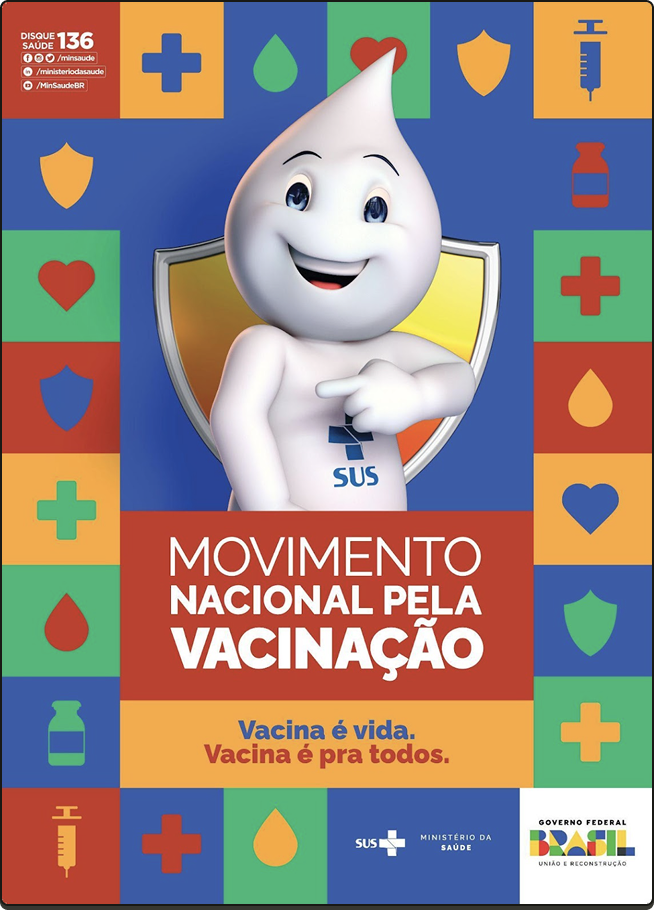
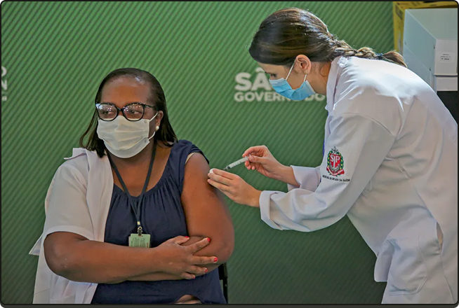
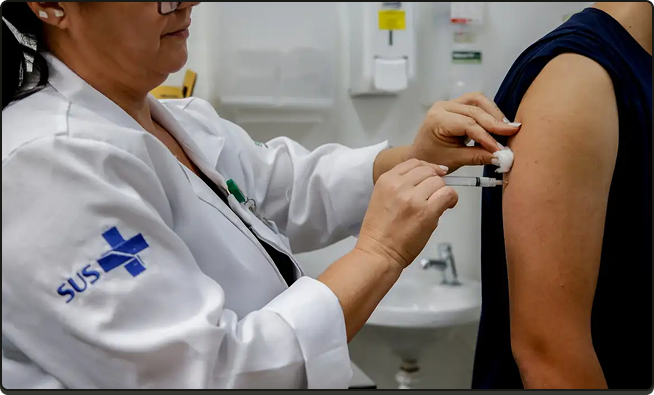

Para começo de conversa
A necessidade de desenvolvimento do "Curso Autoinstrucional sobre Hesitação Vacinal: uma ferramenta para auxiliar os profissionais de saúde da Atenção Primária à Saúde", cujo objetivo é abordar o conceito de hesitação vacinal de forma crítica e contextualizada, surge a partir da rápida e drástica alteração da cobertura vacinal no Brasil, ocorrida na última década. Este contexto, reforçou a necessidade de debater, entre outras ações relacionadas, uma das principais ameaças à saúde pública nacional e global, que é o crescimento da desconfiança da sociedade nas vacinas.

#PraTodosVerem:
Ilustração retangular colorida. Ao centro, Zé Gotinha sorri, com o dedo indicador da mão direita apontado para a logomarca azul do SUS no peito. Abaixo, em letras brancas, azuis e vermelhas: Movimento Nacional pela Vacinação. Vacina é vida. Vacina é pra todos. No torno, moldura quadriculada com figuras coloridas e as informações no canto superior esquerdo, em fundo vermelho: Disque saúde 136. Redes sociais: /minhasaúde /ministeriodasaude /MinSaudeBR. No canto inferior direito, em fundo branco: SUS, Ministério da Saúde, Governo Federal Brasil, União e Reconstrução.
Para iniciarmos o diálogo proposto pelo curso, é importante partirmos do princípio de que não é possível pensar em vacinas e em vacinação sem pensar na sociedade em sua complexidade. Inúmeros são os fatores que levam os indivíduos e populações a aderirem ou não à vacinação, que vão desde valores morais e acesso a informações confiáveis até a oferta de serviços de saúde e disponibilidade de imunizantes.
Ao conjunto de motivos e fatores que levam à resistência de uma população para a vacinação denomina-se de Hesitação Vacinal. Trata-se de um conceito cunhado em 2012 por um grupo de especialistas vinculados à Organização Mundial de Saúde, que explica hesitação vacinal como o atraso ou a recusa em aceitar as vacinas recomendadas, apesar de sua disponibilidade nos serviços de saúde, associado a fatores culturais, sociais, econômicos e políticos, que pode variar o longo do tempo, do local e dos tipos de vacinas.
Contudo, para além de observarmos os conceitos que nos ajudam a compreender o problema, precisamos olhar para trás e realizarmos uma retrospectiva histórica, de um passado não tão remoto. Apesar da hesitação ser um fenômeno crescente na última década, sabemos que o período que compreendeu a ocorrência da pandemia de Covid-19 (2020 a 2022) foi crucial para a mudança drástica entre a confiança e a desconfiança nas vacinas, no Brasil e no mundo.
Enquanto o país perdia 700 mil vidas por falta de uma condução política à altura de uma emergência sanitária de importância global, o poder executivo federal à época incentivava publicamente a população a não se vacinar, ao passo que o governo federal atrasou em meses a aquisição das vacinas contra a Covid-19 e trabalhou em desfavor ao PNI e da obrigatoriedade da vacinação. Esse processo só começou a se inverter com a mudança da condução política do governo federal eleito em 2022, que colocou a retomada da confiança nas vacinas e do aumento das coberturas vacinais como uma das metas do plano de governo.
Fonte: Julia Prado/MS
#PraTodosVerem:
Fotografia de Nísia, vista dos ombros para cima. É uma mulher branca, cabelos castanhos lisos na altura do pescoço, olho escuros e batom vermelho. Usa casaco branco sobre blusa verde claro. Segura o microfone com a mão esquerda e sorri. No entorno, quatro pessoas sorriem e uma delas aplaude.
Contexto nacional e global
Evidente que esse processo de desconfiança nas vacinas e de desconstrução das políticas de vacinação não é recente e muito menos se iniciou na pandemia ou em razão do surgimento do vírus Sars-Cov-2.
O que aconteceu foi que, no período da pandemia e em meio a uma série de incertezas, inseguranças e do luto coletivo que a população e os profissionais de saúde enfrentavam, grupos políticos neofascistas e de extrema direita estavam na condução do poder central no Brasil (e em outros países) e amplificaram as vozes e pautas dos movimentos contrários à vacinação - que estão organizados há décadas e ganharam notoriedade com o advento das redes sociais. No contexto nacional, se não fossem os esforços envidados por governadores, prefeitos, deputados, senadores, juízes, coletivos de imprensa, cientistas, profissionais de saúde, movimentos sociais e sociedade civil organizada, entre outros atores, correríamos um grande risco de não termos informações, insumos, tecnologias, leitos, testes e vacinas para o enfrentamento da Covid-19.

Fonte: Suamy Beydoun/Agif/Estadão Conteúdo
#PraTodosVerem:
Fotografia de Mônica, vista do peito para cima. É uma mulher negra, cabelos pretos lisos até os ombros e óculos de grau. Usa máscara descartável branca, vestido preto e um cordão com crachá no pescoço. É vacinada no braço esquerdo por uma enfermeira de pele branca, cabelos castanhos presos em uma trança e jaleco branco, de perfil.
O papel do Sistema Único de Saúde no enfrentamento à hesitação vacinal

#PraTodosVerem:
Fotografia de uma mulher branca de perfil à esquerda, vista do nariz para baixo. Ela usa jaleco branco com a logomarca do SUS em azul, na manga direita. Aplica a vacina com uma seringa na parte posterior do braço direito de uma pessoa branca que está de costas, com regata preta. Ao fundo, o ambiente de uma enfermaria.
Conforme diversos estudos demonstram, a catástrofe da pandemia de Covid-19 teria sido maior se não contássemos com o maior sistema de saúde pública e de acesso universal do mundo: o Sistema Único de Saúde (SUS). O SUS é resultado da conquista do direito universal à saúde garantido na Constituição Federal de 1988 e organiza-se por princípios doutrinários e diretrizes organizativas que orientam o seu funcionamento, por meio das leis orgânicas da saúde. Tem nos princípios da universalidade, equidade e integralidade os valores ético-políticos de base para a construção das políticas, programas e ações de saúde no âmbito do sistema. Por meio das suas diretrizes, o sistema é organizado de modo descentralizado, regionalizado e hierarquizado por níveis de atenção (primária, secundária e terciária) e garante-se o processo participativo em suas instâncias decisórias.
Como organizador do cuidado na rede de atenção à saúde e que propicia o vínculo territorializado dos usuários aos serviços, a Atenção Primária em Saúde (APS) no SUS é o locus onde se concentram as ações de imunização para a população, como parte das responsabilidades das Equipes Multidisciplinares de Saúde e das Unidades Básicas de Saúde. Assim, o Programa Nacional de Imunização que foi criado em 1973 e é anterior à conquista do direito à saúde, amplifica-se com o advento do SUS na garantia da vacinação para toda a população brasileira por meio da APS.
Dito isto, esperamos que os conhecimentos proporcionados no "Curso Autoinstrucional sobre Hesitação Vacinal: uma ferramenta para auxiliar os profissionais de saúde da Atenção Primária à Saúde", colabore para o aperfeiçoamento dos serviços de saúde, na perspectiva do fortalecimento do Programa Nacional de Vacinação e aumento da cobertura vacinal no Brasil.
Bons estudos!